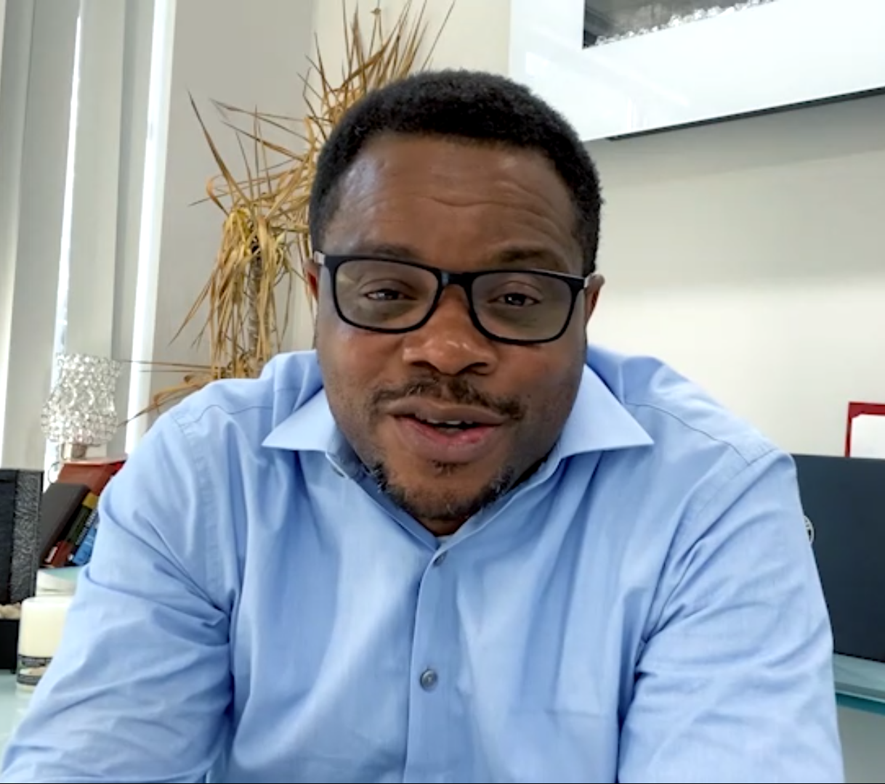
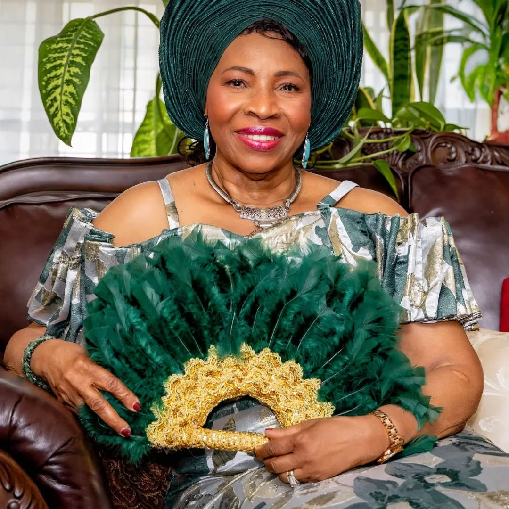
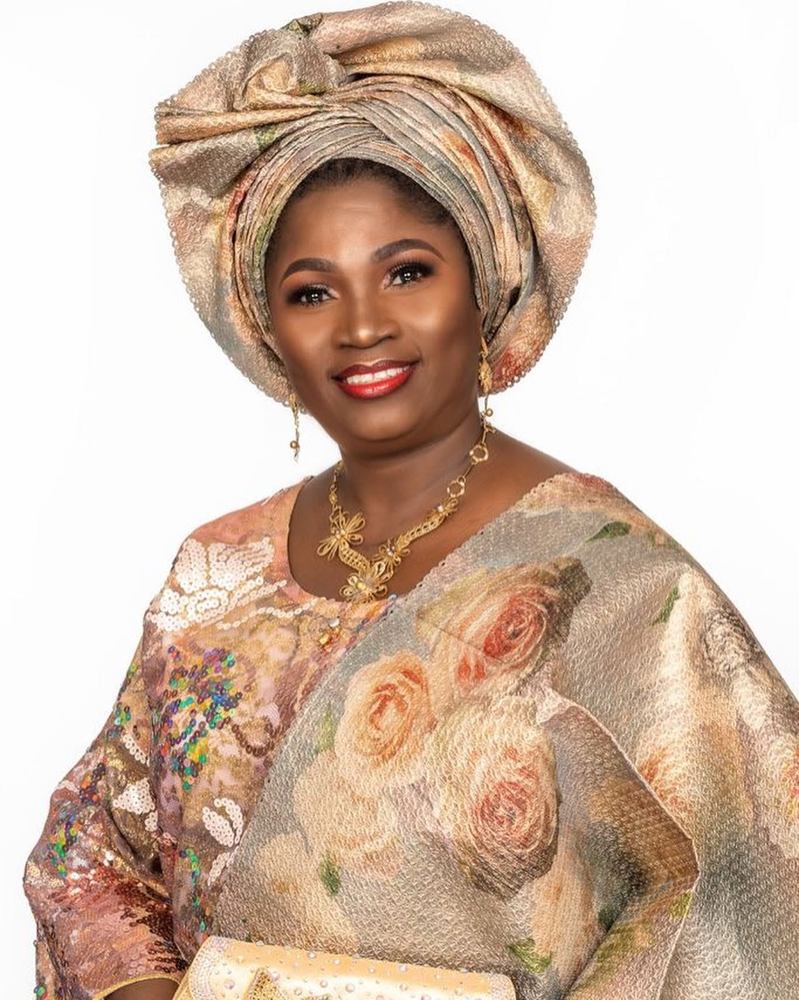
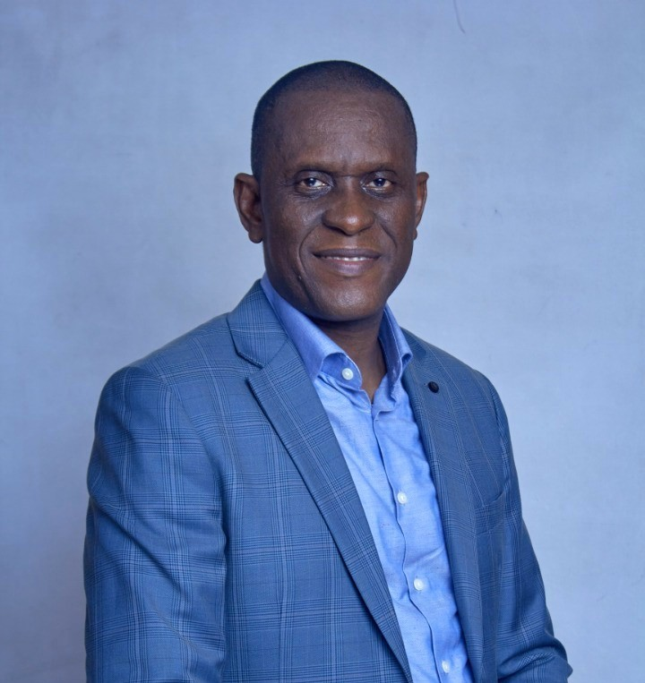

.JPG)

Joel Osebor
Co-Founder & ChairDriven by personal loss and a vision for lasting change, Joel provides strategic leadership to ensure Oluwayemisi's legacy creates meaningful impact.
Leading With Purpose. Serving With Integrity.
The Board of the Oluwayemisi Joel-Osebor Foundation brings together individuals who share a deep commitment to the values, vision, and legacy that inspire our work.
With diverse experience, expertise, and a shared passion for service, our Board provides strategic leadership and responsible stewardship as we work to expand educational opportunities and advance cancer awareness and advocacy. Together, they help ensure that Oluwayemisi's legacy continues to create meaningful and lasting impact.
Diverse experience. Shared passion. United in purpose.

Driven by personal loss and a vision for lasting change, Joel provides strategic leadership to ensure Oluwayemisi's legacy creates meaningful impact.

A healthcare professional dedicated to cancer awareness and advocacy, Dr. Ify guides our medical outreach and awareness programmes.

An education advocate committed to expanding scholarship opportunities and mentoring the next generation of leaders.

Brings extensive experience in building strategic partnerships and organisational growth to amplify the Foundation's reach.
Setting the long-term direction and ensuring alignment with our mission and values.
Ensuring accountability, transparency, and compliance across all operations.
Overseeing financial management and ensuring resources are used effectively for maximum impact.
Leveraging networks and expertise to build partnerships that advance our cause.
.JPG)
We are always seeking passionate individuals who share our commitment to education and cancer awareness.

.JPG)
If you are interested in contributing your expertise to our Board or Advisory Council, we would love to hear from you.
Express Interest